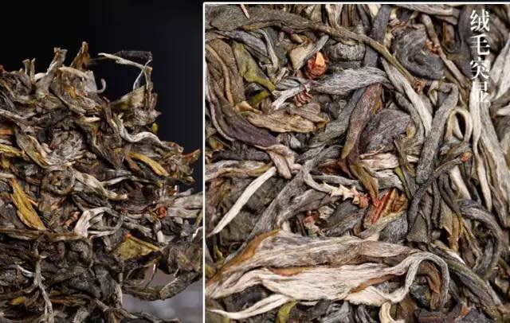

交易中心
交易中心
 交易指南
交易指南
 普洱档案
普洱档案
 普洱资讯
普洱资讯
 下载中心
下载中心
 活动频道
活动频道

有一种普洱,昔归相识少！
2016-01-05 11:01 来源：蒙顶山普洱
昔归忙麓山位于临沧市临翔区最东面的邦东村民委员会辖区，距邦东村12公里。

忙麓山风光秀丽，自然景观十分迷人。土壤为澜沧江沿岸典型的赤红壤，森林植被为亚热带季雨林，林间常见红椿、香樟、大叶榕、牛肋巴、橄榄、野生芒果等植物。
昔归普洱茶
开汤，汤色淡黄清亮，入口即香，无杂味，味甘;三泡后回甘更明显，香气高锐，两颊与舌底生津，舌面感觉微涩，化得很快;四~六泡，香气如兰，冰糖香渐显，水质较粘稠，重手泡后苦现，较轻，易化;七泡后汤色几乎未变，淳厚，更佳，尚微涩，喉韵深，回味悠长;十泡后水渐淡，甜味稍减，回甘好，冰糖香尚存。

有人说"昔归"是"临沧班章"，过去喝得少，认识不多，我也这么认为，可能是指"价格"吧，发现昔归与班章，完全是两种风格，各有千秋，老班章过于刚烈，昔归就幽雅多了，前面数泡，滋味很饱满、强劲，较适合男性品饮，后面数泡，兰韵，冰糖香，女性品饮就很舒服了。

昔归，临沧邦东乡邦东行政村，乃山区。离村委会12公里，距乡政府16公里。面积约4平方公里，海拔750米，年平均气温21℃，年降水量1200毫米。 昔归古茶园多分布在半山一带，混生于森林中，古树茶树龄约200年，较大的茶树基围在60~110厘米。 清末民初《缅宁县志》记载:"种茶人户全县约六、七千户，邦东乡则蛮鹿、锡规尤特著，蛮鹿茶色味之佳，超过其他产茶区"。这里说的蛮鹿，现称为忙麓，锡规现称为昔归。
1970年实行集村运动，忙麓山上的村民陆续搬到了昔归村居住。从那时起，昔归村每年精制100公斤昔归茶上交县上。当时茶农们称之为"县委茶"，县里之所以选中昔归茶作为接待礼仪用茶，其原因莫不由此。
昔归普洱茶的特点
昔归产于云南省临沧市临翔区绑东乡境内的昔归村忙麓山，忙麓山是临沧大雪山向东延伸靠近澜沧江的一部分，背靠昔归山，向东延伸至澜沧江，山脚便是归西渡口(原嘎里古渡)。
昔归古茶

昔归茶，忙麓茶，一个简单的茶，现在被搞得很复杂，大滇，只想简单用数字来说明。

第一，树龄最老的，250年就一棵，正常的，通常的，200年。清末民初《缅宁县志》记载:"种茶人户全县约六、七千户，邦东乡则蛮鹿、锡规尤特著，蛮鹿茶色味之佳，超过其他产茶区"。这里说的蛮鹿，现称为忙麓，锡规现称为昔归。这个是仅仅见于史料最早关于昔归茶的描述。

第二，根本特性 这个是大滇飞扬自己的总结，也是昔归茶特点的来源，没有修剪，只采春秋两季。大滇飞扬见过许多许多古树，口感不如意的原因，往往是两条:第一，修剪，第二，过渡采摘;根本原因是为了提高产量，方便采摘。易武的茶树，就其历史而言，显然比昔归早几百年，但是，稍一长高，超过2米，即把主干砍断，只许向四周发芽生长，不许往高处长。在茶区周游的过程中，大滇发现，即便某些地区的茶树，树龄不够易武老，但往往有出色表现，其中一个原因是:没有修剪。易武高山寨的茶，我认为比麻黑出色，就在于，年份虽短了几百年，但是，没有修剪，滋味更饱满。
忙麓山的茶还有一个特点，是自然生长的。有的树高三、四米，有的五、六米，有几棵茶树主干只剩下一截枯树桩，但又从底部重新长出了锄把粗的新树叉。大茶树基围在80~90厘米左右，茶园属传统采摘自然生长，树枝盘曲向上，经百年的人工无意造作，形成的造型嶙峋古怪，似卧龙、似飞禽展翅，既易攀援采摘又有观赏性，是典型的人工栽培古茶园。

一般经过修剪的茶树，叶型会比这个大而圆。许多人会因为昔归茶的条索，感觉是细而长，甚至说，不是古树茶。关于这些，我听过很多形而上学的人说过太多了，叶底不厚的不是古树茶，叶面不长毛的不是古树茶，叶子细长的不是古树，叶底墨绿的才是古树茶，而发黄的不是古树茶。这些都是胡说八道，我对任何专家说这样的话敢于直接反击，并非是因为我的狂妄，而是因为我手里握有事实!

下面是对昔归茶的评价:
一，关于霸气，15秒内，充斥苦涩，然后回甘(这个评价仅仅限于春茶);
二，水非常关键，忙麓山里的泉水，对比临沧市区桶装水，夸张点说，有30%的加分值;
三，所谓菌子香，是关于昔归茶的传说，这种香型的描述，并不确切，但是大家可以试着体会;
四，昔归春茶和秋茶，有70%的落差(形容差距)，但我依然认为，忙麓茶，即便是秋茶，仍然很强大;
五 ，纯度与浓强度，相当于2003年的老班章。如果让我出价，那么忙麓山春茶，是我愿意用目前老班章三倍价格购买的茶;
六，昔归茶的后半段，与茶王树的后半段，有相似之处。
有人说有所谓冰糖香，这个，主观因素较多，大家自己体会。总之，我觉得是一个前半段象03年之前的老班章，后半段象茶王树这样级别的茶。喝过更早老班章的人都认为，现在的老班章，仅仅只有一点点韵，忙麓是昔归里最好的，应该这么认为，因为现在忙麓山归属于昔归了。在1970年前，忙麓不属于昔归，而昔归，又是邦东村委会的一个自然村，属于邦东乡邦东村委会昔归自然村。

- 【勐库茶区】勐库西半山中著名的几个茶区2016-01-13
- 关于普洱茶的“四喜四怕”2016-01-13
- 品天外之韵,追那卡之香2016-01-05
- 有一种圣诞节的浪漫，叫陪我喝杯茶2015-12-24
- 勐库十八寨 —大雪山2015-12-24